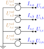

Voltage sources
A voltage source is an ideal voltage reference with a current slack: it fixes the bus terminal voltages and injects whatever current the rest of the network requires. It is the power-flow reference (slack) bus. This model version permits exactly one. Parts 1–5 state the foundational model; part 6 records how BMOPFTools realises it. Symbols are defined in Notation.

1. Data model
A voltage source is an entry of the top-level voltage_source object, keyed by its string ID $s$.
| Field | Type | Unit | Req. | Description |
|---|---|---|---|---|
bus | string | – | ✔ | Host bus ID $i$ |
terminal_map | string[] | – | ✔ | Conductor→terminal map $\textcolor{purple}{\mathbf{N}_{s}}$ (phase terminals) |
v_magnitude | number[] | V | ✔ | Per-terminal voltage magnitude |
v_angle | number[] | rad | ✔ | Per-terminal voltage angle |
2. Input symbols
| Field | Symbol | Notes |
|---|---|---|
v_magnitude | $\textcolor{red}{\lvert\mathbf{U}^{s}_{s}\rvert}$ | per terminal |
v_angle | $\textcolor{red}{\boldsymbol{\theta}^{s}_{s}}$ | per terminal |
3. Variables
The source injects a slack current $\textcolor{blue}{I_{s,k}}$ per phase terminal, stacked into $\textcolor{blue}{\mathbf{I}_{s}}$. It is otherwise unconstrained — it absorbs whatever power balance the network requires, which is what makes this the reference bus.
4. Equality constraints
Fixed reference voltage
Each phase terminal is fixed to its polar reference, and the source-bus neutral to ground:
\[\textcolor{blue}{U_{i,p}} = \textcolor{red}{|U^{s}_{s,p}|}\,\textcolor{brown}{\angle}\,\textcolor{red}{\theta^{s}_{s,p}}, \qquad \textcolor{blue}{U_{i,n}} = 0.\]
Slack current injection
The slack current enters KCL at the phase terminals, with its return at the neutral: $+\textcolor{blue}{I_{s,k}}$ at phase $t_k$, and $-\sum_k\textcolor{blue}{I_{s,k}}$ at the neutral.
5. Inequality constraints
Cartesian variable bounds
None — the slack current is free.
Engineering bounds
None (foundational). A pure slack has no rating. (The implementation offers optional grid-connection power bounds; see part 6.)
6. Implementation in BMOPFTools
Realisation
- Voltage fixing. Each phase terminal is fixed to
v_mag·cos(v_ang),v_mag·sin(v_ang); the source-bus neutral is fixed to 0 V so it is not a free null-space variable (source.jl:_add_source_constraints!). - Slack current.
cr_src/ci_srcare injected into KCL at the phase terminals, with the summed return at the neutral (_kcl_add!). Because the terminal voltages are fixed constants, the per-phase power is linear in the slack current.
Optional grid-connection bounds (implementation extension)
When p_min/p_max/q_min/q_max are supplied, the source becomes a bounded grid connection. The per-phase power is linear in the slack current (the terminal voltages are fixed), and box-bounded:
\[\textcolor{blue}{S_{s,k}} = \Delta\textcolor{blue}{U_{s,k}}\,(\textcolor{blue}{I_{s,k}})^{*} = P_k + \textcolor{brown}{j}\,Q_k, \qquad \textcolor{red}{P^{\min}_k}\le P_k\le\textcolor{red}{P^{\max}_k}, \qquad \textcolor{red}{Q^{\min}_k}\le Q_k\le\textcolor{red}{Q^{\max}_k}.\]
Absent bounds leave a pure slack.
Source map
| Constraint | Code location |
|---|---|
| Voltage fixing, neutral fixing | source.jl:_add_source_constraints! |
| Slack current + KCL, optional P/Q bounds | source.jl:_add_source_constraints! |
The optional grid-connection fields p_min, p_max, q_min, q_max (and a configuration) are read and enforced by the code, but the schema's voltage_source object requires only v_magnitude, v_angle, bus, terminal_map and does not list them. Add these fields (with units W/var) to make bounded sources expressible in conformant data.